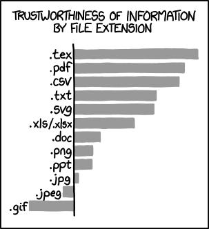

<!doctype html>
<html lang="en">
    <head>
        <meta charset="utf-8">
        <title>reveal-md</title>
        <link rel="stylesheet" href="css/reveal.css">
        <link rel="stylesheet" href="css/theme/black.css" id="theme">
        <!-- For syntax highlighting -->
        <link rel="stylesheet" href="lib/css/zenburn.css">

        <!-- If the query includes 'print-pdf', use the PDF print sheet -->
        <script>
          document.write( '<link rel="stylesheet" href="css/print/' + ( window.location.search.match( /print-pdf/gi ) ? 'pdf' : 'paper' ) + '.css" type="text/css" media="print">' );
        </script>
    </head>
    <body>

        <div class="reveal">
            <div class="slides"><section  data-markdown><script type="text/template"># Übungsblatt 2

<small>by Simon Selg, Danny Stoll</small>
</script></section><section  data-markdown><script type="text/template">
## Gliederung

- [Organisatorisches](/exc02.md#/2)
- [Allgemeines](/exc02.md#/3)
- Aufgaben
  - [Aufgabe 1](/exc02.md#/4)
  - [Aufgabe 2](/exc02.md#/5)
  - [Aufgabe 3](/exc02.md#/6)
  - [Aufgabe 4](/exc02.md#/7)
- [Blatt 3](/exc02.md#/8)

</script></section><section  data-markdown><script type="text/template">
<!-- .slide: data-background="./images/sadday.gif" -->
## Schweigeminute
</script></section><section ><section data-markdown><script type="text/template">
## Organisatorisches
</script></section><section data-markdown><script type="text/template">
### Anwesenheit


</script></section><section data-markdown><script type="text/template">
### Abgaben per Email


</script></section><section data-markdown><script type="text/template">
### PDF als Abgabe!



</script></section><section data-markdown><script type="text/template">
### Englische Klausur


</script></section><section data-markdown><script type="text/template">
### Korrektur Fehler

- Nach dem Tutorat
- Fachliche Unklarheiten sofort!


</script></section></section><section ><section data-markdown><script type="text/template">
## Allgemeines
</script></section><section data-markdown><script type="text/template">
### Blatt 2 Statistiken

- $\varnothing_{Punkte} \approx 11.2$
- $\sigma_{Punkte} \approx 3.8$

</script></section><section data-markdown><script type="text/template">
### Klausur Relevanz
</script></section><section data-markdown><script type="text/template">
### Erste Aufgabe

- [Aufgabe 1](/exc02.md#/4)
- [Aufgabe 2](/exc02.md#/5)
- [Aufgabe 3](/exc02.md#/6)
- [Aufgabe 4](/exc02.md#/7)
- [Blatt 3](/exc02.md#/8)
</script></section></section><section ><section data-markdown><script type="text/template">
## Aufgabe 1
</script></section><section data-markdown><script type="text/template">
### Programm Spezifikationen

- $f(0) = 1$
- $f(1) = 1$
- $f(n) = f(n - 1) + f(n - 2)$ <span style="width: 50px;display: inline-block;"></span> (für n $\geq 2$)
- $S(32) = f(n)$ nach Programm
</script></section><section data-markdown><script type="text/template">
### Idee
</script></section><section data-markdown><script type="text/template">
### Pseudo-Code

```
// initialisation
S(31) := 0
S(32) := 1

// calculation
S(33) := S(32) + S(31)

// check if done
S(30) := S(30) - 1
if S(30) > 0 goto END

// save it
S(31) := S(32)
S(32) := S(33)

goto CALCULATION
```
</script></section><section data-markdown><script type="text/template">
### Initialisierung

```
LOADI 0;       # ACC  := 0
STORE 31;      # S(31):= ACC = 0
LOADI 1;       # ACC  := 1
STORE 32;      # S(32):= ACC = 1
```
</script></section><section data-markdown><script type="text/template">
### Berechnung

```
LOAD 31;       # ACC  := S(31)
ADD 32;        # ACC  := ACC + S(32)
STORE 33;      # S(33):= ACC
```
</script></section><section data-markdown><script type="text/template">
### Abfrage ob S(30) > 0

```
LOAD 30;       # ACC := S(30)
SOBI 1;        # ACC := ACC - 1
JUMP ≤ 7;      # PC  := PC + 7 falls ACC ≤ 0
```
</script></section><section data-markdown><script type="text/template">
### Speichere die Zwischenergebnisse

```
STORE 30;      # S(30) := ACC = S(30) - 1
LOAD 32;       # ACC   := S(32)
STORE 31;      # S(32) := ACC = S(32)
LOAD 33;       # ACC   := S(33)
STORE 32;      # S(32) := ACC = S(33)
```
</script></section><section data-markdown><script type="text/template">
### Springe zurück zur Berechnung:
```
JUMP - 11;     # PC := PC - 11 = 4
END
```
</script></section><section data-markdown><script type="text/template">
### Kompletter Code

<pre><code data-trim data-noescape style="max-height: 800px; font-size: 18px; line-height: 20px;">
# Initialisierung
LOADI 0;       # ACC := 0
STORE 31;      # S(31) := ACC = 0
LOADI 1;       # ACC := 1
STORE 32;      # S(32) := ACC = 0

# Berechnung
LOAD 31;       # ACC := S(31)
ADD 32;        # ACC := ACC + S(32)
STORE 33;      # S(33) := ACC

# Abfrage ob S(30) > 0
LOAD 30;       # ACC := S(30)
SOBI 1;        # ACC := ACC - 1
JUMP ≤ 7;      # PC := PC + 7 falls ACC ≤ 0

# Speichere die Zwischenergebnisse
STORE 30;      # S(30) := ACC = S(30) - 1
LOAD 32;       # ACC := S(32)
STORE 31;      # S(32) := ACC = S(32)
LOAD 33;       # ACC := S(33)
STORE 32;      # S(32) := ACC = S(33)

# Springe zurück zur Berechnung
JUMP - 11;     # PC := PC - 11 = 4
END
</code></pre>
</script></section><section data-markdown><script type="text/template">
### Häufige Fehler
</script></section><section data-markdown><script type="text/template">
### Nächste Aufabe

- [Aufgabe 2](/exc02.md#/5)
- [Aufgabe 3](/exc02.md#/6)
- [Aufgabe 4](/exc02.md#/7)
- [Blatt 3](/exc02.md#/8)

</script></section></section><section ><section data-markdown><script type="text/template">
## Aufgabe 2
</script></section><section data-markdown><script type="text/template">
### INSTITUT FUER INFORMATIK
</script></section><section data-markdown><script type="text/template">
### a) Absolute Häufigkeiten

Zeichen | A | E | F | I | K | M | N | O | R | S | T | U
---|---|---|---|---|---|---|---|---|---|---|---
Häufigkeit | 1 | 1 | 2 | 4 | 1 | 1 | 2 | 1 | 2 | 1 | 4 | 2
</script></section><section data-markdown><script type="text/template">
### b) Huffman-Baum
</script></section><section data-markdown><script type="text/template">
### b) Huffman-Code

I || T | F | N | R | U
---||---|---|---|---|---
00 || 100 | 1010| 1011 | 1100 | 1101


A | E | K | M | O | S
---|---|---|---|---|---
1110|1111|0100|0101|0110|0111
</script></section><section data-markdown><script type="text/template">
### b) Validierung

- 22/22
- Präfixcode Eigenschaft kontrollieren</script></section><section data-markdown><script type="text/template">
### c) Kodierung
</script></section><section data-markdown><script type="text/template">
### d) Eindeutigkeit

- Links/Rechts kodierung
- Knoten gleicher Häufigkeit
</script></section><section data-markdown><script type="text/template">
### Nächste Aufabe

- [Aufgabe 1](/exc02.md#/4)
- [Aufgabe 3](/exc02.md#/6)
- [Aufgabe 4](/exc02.md#/7)
- [Blatt 3](/exc02.md#/8)
</script></section></section><section ><section data-markdown><script type="text/template">
## Aufgabe 3
</script></section><section data-markdown><script type="text/template">
### Programm

```
# Initialisation, S(0) = x, S(1) = y
LOADI 0        # ACC := 0  
STORE 2        # S(2):= 0
# Loop start
LOAD 1         # ACC := S(1)
SUBI 1         # ACC := ACC - 1
STORE 1        # S(1):= ACC
JUMP < 5       # PC  := PC + 5, falls ACC < 0
LOAD 2         # ACC := S(2)
ADD 0          # ACC := ACC + S(0)
STORE 2        # S(2):= ACC
JUMP -7        # PC  := PC - 7
# Loop end
END
```
</script></section><section data-markdown><script type="text/template">
### Initialisation

```
# () Initialize
LOADI 0        # ACC := 0  
STORE 2        # S(2):= 0
```
</script></section><section data-markdown><script type="text/template">
### Loop (i)

```
# (i) Decrement S(1), also store in ACC

LOAD 1      # ACC  := S(1)
SUBI 1      # ACC  := ACC -1
STORE 1     # S(1) := ACC
```
</script></section><section data-markdown><script type="text/template">
### Loop (ii)

```
# (ii) Stop programm when:     (ACC  < 0)
#                          <=> (S(1) < 0)

JUMP < 5   # PC := PC + 5, falls ACC < 0
```
</script></section><section data-markdown><script type="text/template">
### Loop (iii)

```
# (iii) Add S(0) to S(2)

LOAD 2      # ACC  := S(2)
ADD 30      # ACC  := ACC + S(0)
STORE 2     # S(2) := ACC
JUMP -7     # PC   := PC - 7
```
</script></section><section data-markdown><script type="text/template">
### Summary

- <font color="#ff4500">$\emptyset$</font> S(0) = x, S(1) = y, S(2) = 0
- <font color="#ff4500">(i)</font> Dekrementiere S(1)
- <font color="#ff4500">(ii)</font> Stop programm falls S(1) < 0
- <font color="#ff4500">(iii)</font> Addiere S(0) zu S(2), springe zu (i)
</script></section><section data-markdown><script type="text/template">

### Zu zeigen

Nach Programmausführung gilt:
$$
S(2) = x \cdot y
$$
</script></section><section data-markdown><script type="text/template">
### Induktionsbeweis

- <font color="#ff4500">$\mathrm{Z\kern-.3em\raise-0.5ex\hbox{Z}}$:</font> Aussage A
- <font color="#ff4500">IA:</font> $n=\lambda:$ A gilt.
- <font color="#ff4500">IV:</font> A gelte für ein $n$
- <font color="#ff4500">IS:</font> $n \rightarrow n+1$
</script></section><section data-markdown><script type="text/template">
### Induktionsanfang

<div align="left">Sei $y=0:$</div>

- <font color="#ff4500">$\emptyset$</font> S(0) = x, S(1) = 0, S(2) = 0
- <font color="#ff4500">(i)</font> $S(1) = -1$
- <font color="#ff4500">(ii)</font> Stop programm da S(1) < 0
</script></section><section data-markdown><script type="text/template">
### Induktionsanfang

$$
\begin{align}
\mbox{Es gilt nun: } S(2) &= 0 \\\\
&= x \cdot 0 \\\\
&= x \cdot y \\\\
\end{align}
$$


</script></section><section data-markdown><script type="text/template">
### Induktionsvorraussetzung

Für ein beliebiges $y \in \mathbb{N}$ gilt nach Programmausführung:
$$
S(2) = x \cdot y
$$
</script></section><section data-markdown><script type="text/template">
### Induktionsschritt Idee

- Schleife $y$ mal durchlaufen $\Rightarrow S(1) = 1$
- Betrachte $(y+1)$ten Durchlauf
</script></section><section data-markdown><script type="text/template">
### Induktionsschritt
- <font color="#ff4500">(i)</font> $S(1) = 0$
- <font color="#ff4500">(ii)</font> Programm stopt nicht.
- <font color="#ff4500">(iii)</font> $S'(2) = S(2) + S(0) \stackrel{IV}{=} x \cdot y + x = x (y+1)$
- <font color="#ff4500">(i)</font> $S(1) = -1$
- <font color="#ff4500">(ii)</font> Programm stopt.

<div align="right">$\square$</div>
</script></section><section data-markdown><script type="text/template">
### Häufige Fehler
</script></section><section data-markdown><script type="text/template">
### Nächste Aufabe

- [Aufgabe 1](/exc02.md#/4)
- [Aufgabe 2](/exc02.md#/5)
- [Aufgabe 4](/exc02.md#/7)
- [Blatt 3](/exc02.md#/8)
</script></section></section><section ><section data-markdown><script type="text/template">
## Aufgabe 4
</script></section><section data-markdown><script type="text/template">
### Aufgabenstellung

- Alphabet: $A = \\{ a_k | 1 \leq k \leq 3 \leq m \\}$
- $p$: $A \rightarrow H$
- Code: $c$
</script></section><section data-markdown><script type="text/template">
### a) Zu zeigen

$$
\begin{align}
  &\exists i \in 1, ..., m: p(a_i) > 0.5  \\\\
  \Rightarrow & |c(a_i)| = 1  \\\\
\end{align}
$$

</script></section><section data-markdown><script type="text/template">
### a) Beispiel
</script></section><section data-markdown><script type="text/template">
### a) Beweis

$$
\begin{align}
1 &= \sum\_{j=1}^m p(a\_j) \\\\
&= p(a\_i) + \sum\_{(j=1, \ j \neq i)}^m p(a\_j) \\\\
\end{align}
$$
</script></section><section data-markdown><script type="text/template">
### a) Beweis

$$\stackrel{p(a\_i)>0.5}{\Rightarrow} \sum\_{(j=1, \ j \neq i)}^m p(a\_j) < 0.5\\\\$$
</script></section><section data-markdown><script type="text/template">
### a) Beweis

- $a_i$ erst zu Baum, wenn alle $a_j$ mit $j \neq i$ zu einem Knoten vereint.
- $\Rightarrow a_i$ ist Nachfolger der Wurzel
- $\Rightarrow |c(a\_i)| = 1$
</script></section><section data-markdown><script type="text/template">
#### b) Widerspruchsbeweis

- <font color="#ff4500">$\mathrm{Z\kern-.3em\raise-0.5ex\hbox{Z}}$:</font> Aussage A
- <font color="#ff4500">Ang.:</font> nicht A.
- <font color="#ff4500">$\Rightarrow$</font> $F \mbox{ und } \neg F$ <font color="#ff4500">$\unicode{x21af}$</font>
- <font color="#ff4500">$\Rightarrow$</font> A gilt</script></section><section data-markdown><script type="text/template">
### b) Zu zeigen

$$
\begin{align}
  &\exists i: 1 \leq i \leq m: |c(a_i)| = 1 \\\\
  \Rightarrow &p(a_i) \geq \frac{1}{3}   \\\\
\end{align}
$$
</script></section><section data-markdown><script type="text/template">
### b) Beispiel $m = 3$
</script></section><section data-markdown><script type="text/template">
### b) Negation

A | B || $A \Rightarrow B$ || $ A \wedge \neg B$
---|---|---|---
0 | 0 ||1||0
0 | 1 ||1||0
1 | 0 ||0||1
1 | 1 ||1||0
</script></section><section data-markdown><script type="text/template">
### b) Annahme

$$
|c(a_i)| = 1 \mbox{ und } p(a_i) < \frac{1}{3}
$$
</script></section><section data-markdown><script type="text/template">
### b) Folgerungen

- $\exists v \neq a_i$: v Nachfolger Wurzel
- $\exists v_i$:
  - $v_i \mbox{ Nachfolger v }$
  - $p(v_i) > \frac{1}{3}$ <font color="#ff4500">$\unicode{x21af}$</font>
</script></section><section data-markdown><script type="text/template">
## Nächste Aufgabe

- [Aufgabe 1](/exc02.md#/4)
- [Aufgabe 2](/exc02.md#/5)
- [Aufgabe 3](/exc02.md#/6)
- [Blatt 3](/exc02.md#/8)
</script></section></section><section ><section data-markdown><script type="text/template">
## Blatt 3
</script></section><section data-markdown><script type="text/template">
### Hinweise
</script></section><section data-markdown><script type="text/template">
### Klausur Relevanz
</script></section></section><section  data-markdown><script type="text/template">
## Sonstiges
</script></section><section  data-markdown><script type="text/template">
## Quellen

- [Sad day](https://media.giphy.com/media/13X2WC8WWCYI6s/giphy.gif)
- [Fuck this shit](https://heavyeditorial.files.wordpress.com/2014/12/college-high-school-finals-week-meme-8.jpg?quality=65&strip=all&w=780)
- [Emails Sunday](http://www.freshsupercool.com/wp-content/uploads/2013/07/funny-email-marketing.jpg)
- [English doge](http://m.memegen.com/f6foyv.jpg)
- [File extensions](https://imgs.xkcd.com/comics/file_extensions.png)
- [Duty calls](https://imgs.xkcd.com/comics/duty_calls.png)
- [Korrelation](http://www.explainxkcd.com//wiki/images/9/9c/correlation.png)
</script></section></div>
        </div>

        <script src="lib/js/head.min.js"></script>
        <script src="js/reveal.js"></script>

        <script>
            function extend() {
              var target = {};
              for (var i = 0; i < arguments.length; i++) {
                var source = arguments[i];
                for (var key in source) {
                  if (source.hasOwnProperty(key)) {
                    target[key] = source[key];
                  }
                }
              }
              return target;
            }

            // Optional libraries used to extend on reveal.js
            var deps = [
              { src: 'lib/js/classList.js', condition: function() { return !document.body.classList; } },
              { src: 'plugin/markdown/marked.js', condition: function() { return !!document.querySelector('[data-markdown]'); } },
              { src: 'plugin/markdown/markdown.js', condition: function() { return !!document.querySelector('[data-markdown]'); } },
              { src: 'plugin/highlight/highlight.js', async: true, callback: function() { hljs.initHighlightingOnLoad(); } },
              { src: 'plugin/notes/notes.js', async: true, condition: function() { return !!document.body.classList; } },
              { src: 'plugin/math/math.js', async: true },
              { src: 'plugin/math/math.js', async: true }
            ];

            // default options to init reveal.js
            var defaultOptions = {
              controls: true,
              progress: true,
              history: true,
              center: true,
              transition: 'default',
              dependencies: deps,
              math: {
                mathjax: 'https://cdn.mathjax.org/mathjax/latest/MathJax.js',
                config: 'TeX-AMS-MML_HTMLorMML'
              }
            };

            // options from URL query string
            var queryOptions = Reveal.getQueryHash() || {};

            var options = {};
            options = extend(defaultOptions, options, queryOptions);
            Reveal.initialize(options);
        </script>

          <script src="/scripts/ti-presentation-ws-2016"></script>
    </body>
</html>

